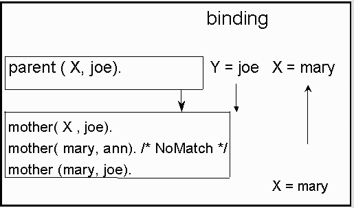
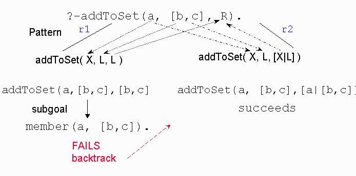
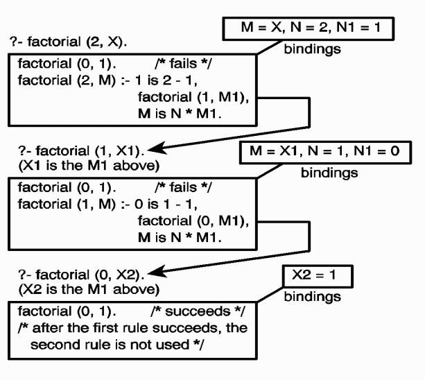
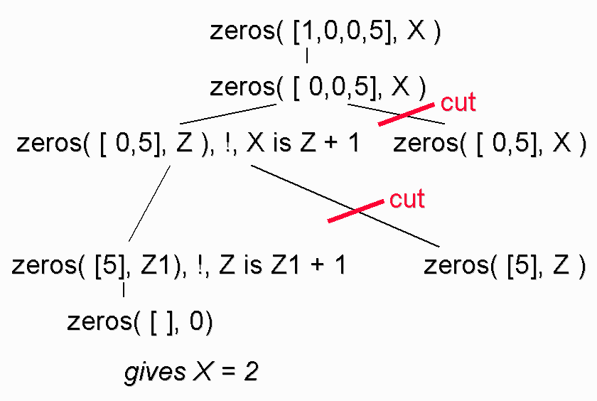

Programming in Prolog
What will be covered?
-
•Some
logical operators
•
-
Review
of binding of values
•
-
Review
of how prolog executes a query
•
-
-
Programming
"what" not "how"
•
-
-
-
A logic
programming language is
a
notational system for writing logical statements
together with specified algorithms for implementing inference rules.
family.pl
program
/*
If
mother( X ,Y ) then parent( X ,Y ) */
parent(
X , Y ) :– mother( X , Y ).
parent(
X , Y ) :– father( X , Y ).
/*
if
parent( X ,Y ) and parent(Y,Z ) then grandparent( X ,Z ). */
grandparent(
X , Z ) :– parent( X , Y ),parent(Y, Z ).
- the following fact is
redundant
-
Logical
Operators
- •true : goal always succeeds
- fail : goal always fails
- =
(equality) : A term X = Y succeeds if
X and Y match
- Prolog will try to match
them
- \=
(inequality) : \= is the opposite of =
- X ; Y : Disjunction
(or) of two goals
- parent( X , Y )
:– mother(
X , Y ); father( X , Y ).
parent(
X , Y ) :– mother( X , Y ).
parent(
X , Y ) :– father( X , Y ).
Execution model :
Unification, pattern matching and
backtracking
/* facts */
mother(mary, ann).
mother(mary,
joe).
mother(sue,
mary ).
father(mike,
ann).
father(mike,
joe).
/* rules */
parent( X , Y ) :– mother( X , Y ).
parent( X , Y
) :– father( X , Y ).
/* Query */
?- parent( X , joe).
X
= mary
true .
- curious.pl
- What is the result of
?- jealous(A,B).
Why?
- What is the sequence of
binding the variables to a value?
What is the sequence of execution?
- 
Review of Recursion -- Divide and Conquer
-
‘general’
cases
where the solution is constructed from solutions of (simpler) version
of the original problem itself.
-
trivial, or boundary
case
Example - What is the length
of a list?
- What is the general formula?
- What is the boundary
condition?
Converting to Prolog
- Relations NOT functions
- NO return values!
- Where does the "length"
value stored?
- length(
[ ], 0 ).
length([H
| T], Acc) :-
-
length(T,Nx),
-
Acc
is Nx + 1 .
(note:
length is build in and this code
will cause an error.)
Executing length--
?-
length ( [1, 59, 49], X).
?- length ( jim, X).
?- length ( Jim, X).
What will happen if we change
the order of the rules?
- length([H
| T], Acc) :-
-
Acc is Nx + 1, length(T,Nx).
- length2(
[ ], 0 ).
Another example --
writing code to implement set operations
- Using lists as the container
for implementing bags and sets.
- Problem: Is Elem a
member of a Set?
- Base case:
Recursive (general rule):
- Consider what happens if
Elem is not in the set. What
should happen?
- Member relation
A break in the logical Model :
write -- is extra logical to provide
I/O
?
– X = [1, 2, 3], write(
X
), nl, mymember(a, X ).
[1, 2, 3]
;
false.
?
– mymember(a, X ), write( X ),
nl,
X = [1, 2, 3].
[a| _3]
;
[ _5, a| _7]
;
[ _5, _8, a| _9]
;
[ _5, _8, _11, a|
_12] ;
[_5, _8,
_11, _14, a| _15] ;
intersect( SetA, SetB,
Intersection)
- What is the base case?
- Need to select which set
to recurse on.
- What are the two recursive
(general) rules?
- ?? "head" in both sets
match
- ?? otherwise
- Intersect relation
union(
SetA, SetB Union)
addToSet(
E, SetA, Result )
- –If
E is in
the SetA what should Result be?
- How do
you
check that E is in SetA?
- If
E is NOT a
member of SetA what should Result be?
- No
recursion just
use the pattern
matching power of Prolog
and backtracking!
r1: addToSet(
X,L,L ) :- member( X, L ).
r2: addToSet(
X,L,[X|L] ).

Declarative
Meaning
vs Procedural Meaning
- Declarative
meaning is concerned only with relations by
the
program.
- Declarative meaning
determines what
will
be the output of the program.
What does GCD mean? What are the axioms that define GCD?
- GCD of any number, n,
and zero is n
- GCD
of m,
n is equal to the GCD of n, m
- GCD
of m & n
is the GCD of mod (m
, n
) and n if m
> n
Converting
to Prolog.
gcd(
A, 0, A ).
gcd(
A, B, D ) :- (A<B), gcd( B, A, D ).
gcd(
A, B, D ) :- (A>B), (B>0),
R
is A mod B, gcd( B, R, D ).
- Remember is
breaks the
logical model.
-
–Notice
that "is" operator
evaluates the expression first then the
result to
unification with R.
Converting specification
of n!
to Prolog.
Recursive
definition:
n!
= n
* ( n
- 1)!
0! = 1
factorial(N,
M):– N1 is N
– 1,
factorial
(N1, M1),
M is
N*M1.
How does it work?? What is the binding?

Fibonacci Sequence
- Recursive definition:
- Code:
-
fibonacci_1(
X , 1)
:– X =< 2.
fibonacci_1(
X , Y ) :– X > 2,
X1 is X – 1,
X2 is X – 2,
fibonacci_1( X 1, Y1),
fibonacci_1( X 2, Y2),
Y is Y1 + Y2.
Improvements for calculation
speed.
fibonacci_2(
1, 1).
fibonacci_2(
2, 1).
fibonacci_2(
X, Y ) :–
X > 2, X1 is X
– 1,
X2
is X – 2,
fibonacci_2(
X1, Y1 ),
fibonacci_2(
X2, Y2 ),
Y
is Y1 + Y2,
asserta(fibonacci_2( X,Y ))).
- Variation of Dynamic
Programming
- Using state varables to
pass values from one iteration to the next.
- How can you simulate an
array?
-
fibonacci_3(
N, Fib):– fib_aux( 2,
N,
1, 1, Fib ).
fib_aux
( N, N, F1, Fib, Fib ).
fib_aux
( M, N, F1, F2, F ) :– M
< N,
NextM is M + 1,
NextF2 is F1 + F2,
fib_aux(NextM, N, F2, NextF2, F).
Cuts - used to control
backtracking (procedural)
p(
X ) :- q(X).
p(
X) :- r( X, Y ), ! , s( Y ).
p(
X ) :- t( X).
?-
p(fred).
clause 2
will
be reach only if q(fred)
fails. If it reaches the cut
symbol then it
found the first solution to
r(fred,Y). With
the cut it will only solve s(Y) for the
current instantiation of Y.
If s(Y) fails
it will not try alternatives for r(fred,Y). It
will NOT even try the third clause! Alternatives
deviations that were created before
the selection of the
p(fred) literal are not discarded by the cut, the same for
alternatives created after
the cut.
Red cuts and green cuts
f(N,0)
:- N <
3.
%rule
1
f(N,2)
:- 3=< N, N <
6.
%rule
2
f(N,4)
:- 6 =< N.
%rule 3
f(N,0) :- N <
3, !.
%rule 1
f(N,2)
:- 3=< N, N <
6,!.
%rule 2
f(N,4)
:- 6 =< N.
%rule 3
f(N,0) :- N <
3, !.
%rule 1
f(N,2)
:- N < 6, !.
%rule 2
f(N,4)
.
%rule 3
More on cuts
max(X,
Y, Z) is true if Z is the maximum of X & Y
max(X,Y,X)
:- X
>= Y.
max(X,Y,Y) :- X < Y.
Green cuts, discards no solutions at all or discards only solutions of
no interest.
maxGreen(X,Y,X) :- X >= Y, !.
maxGreen(X,Y,Y)
:- X
< Y.
Red cuts,
sometimes
make it
difficult to understand programs
but
worse
it may be incorrect in terms of the problem to be solved.
maxRed(X,Y,X)
:- X >= Y, !.
maxRed(X,Y,Y).
Diagram
of the effect of using cuts.
fragileZeros(
[ ], 0).
fragileZeros([
0 | T ], Z) :– fragileZeros(T,
Z1), Z is Z1 + 1.
fragileZeros(
[ _ |T ], Z ) :–
fragileZeros(
T, Z ).
zeros(
[ 0 | T ], Z ) :–
zeros( T, Z1), !, Z is Z1 + 1.
zeros(
[ _ | T ], Z ) :–
zeros( T, Z ).

Another example of
cuts... Beware of the order of subgoals!
haveCommonElts1(
X ,Y
) :– mymember( E, X ),
mymember( E, Y ).
haveCommonElts2(
X ,Y
):– mymember( E, X ),
mymember( E,Y ), !.
?
–
haveCommonElts1( X , [1, 2, 3] ).
X
= [1| _14];
X
= [2| _14];
X
= [3| _14];
X
= [ _16, 1| _18];
X
= [ _16, 2| _18];
X
= [ _16, 3| _18];
…
?
–
haveCommonElts1( [1, 2, 3], Y ).
Y
= [1| _33];
Y
= [_35, 1 | _36];
Y
= [_35, _39, 1 | _40]
...
Not!! Another break of the
Logical Model
not(P) :–
call(P), !, fail.
alternatively:
not(P):–
P, !, fail; true.
alternatively:
not(P):–
P, !, fail.
not(P):-true.
test( S, T) :- S = T.
1?-
test( 3, 5).
no
2?-
test( 5, 5).
yes
3?-
not( test( 5,5)).
no
4?-
test( X,3), R is X+2.
X=3
R=5
5?-
not( not( test( X,3))), R is X+2.
warning
unbounded variable in arithmetic expression fail ...
/*
When not(test(X,3)) fails the instantiation of X to 3 is released */
/* X
instantiated to 0, then not( 0= 1) succeeds. */
6?- X
= 0, not( X=1).
X=0
/* X instantiated to 1,
not( X=1) fails, the
goal X = 0 is never reached */
8?-
not( X=1 ),
X=0.
no
9?- A=B, not(not(A=3)),B=5.
What do you think happens?
Other Extra-Logical Operators
- is, =:=
- write(X)
- var , nonvar
- var(X) tests whether x
is unbound (free)
Homoiconicity
is a property of some
languages, in which the primary representation of programs is also a
data structure of the language itself. This makes metaprogramming
easier than in a language without this property.
?-
D = (Exp is 44 // 7 ), call(D).
?- C = (newrule(E):-E is 44 // 7), assert(C).
?- newrule(6).
Code related to these notes:
example.pl
intersect.pl
{kind=link}
{kind=link}